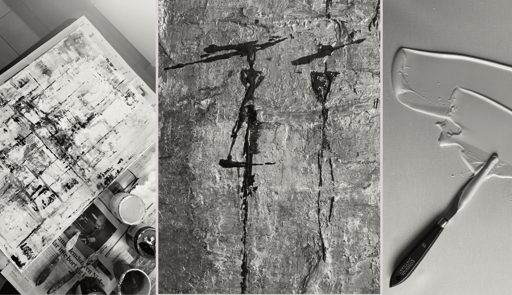

Musik
Musik kan fungera som en bakgrundskuliss som leder till att man får mer känsla för att skapa något. Enligt min åsikt är musik ett måste när jag målar. Musik kan hjälpa till att matcha den känsla du vill förmedla med din konst, vilket även kan stärka kreativiteten. Skapa en spellista med musik som väcker inspirationen för att skapa ett verk!
Årstider och miljö
Vårt avlånga land har varierande årstider, vilket har sina för- och nackdelar beroende på preferenser. Våren och sommaren ger inspiration att vara utomhus och utforska platser för kommande målarverk. Även under höst och vinter, när det blir kallt utomhus och tid spenderas inomhus, kan inspirationen flöda.
Sociala medier
På sociala medier finns det idag många skaparkonton där du kan samla inspiration kring mönster, former och tekniker. Det är viktigt att inte kopiera någons exakta stil, utan samla egna idéer och känslor. Se över vilka material, färger och verktyg som används, börja sedan planera för ditt eget skapande.
